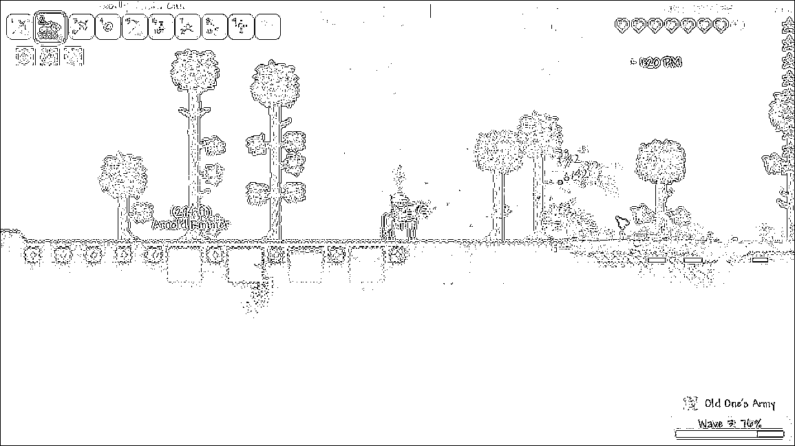

Here is our proposal.
Image processing with edge detection convolution kernel
We used the ridge detection kernel described in this page to process the image. This method essentially does a weighted calculation of the current pixel and surrounding pixels to compute the output pixel. The computations only use the input pixels and do not rely on one another, which means this stage is highly parallelizable. An example of our convolution implementation applied to a common game scenario is below:
original

edge detection
